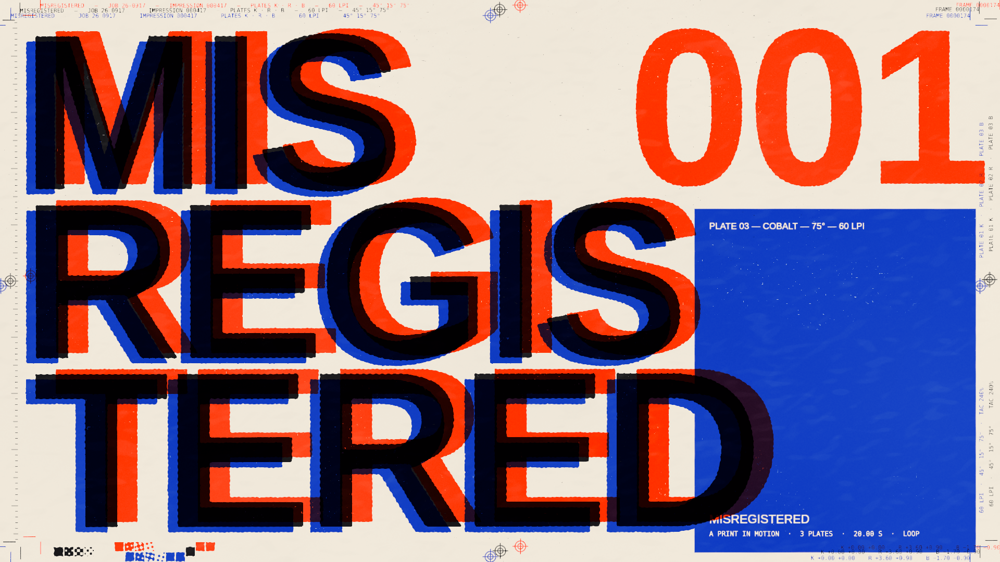
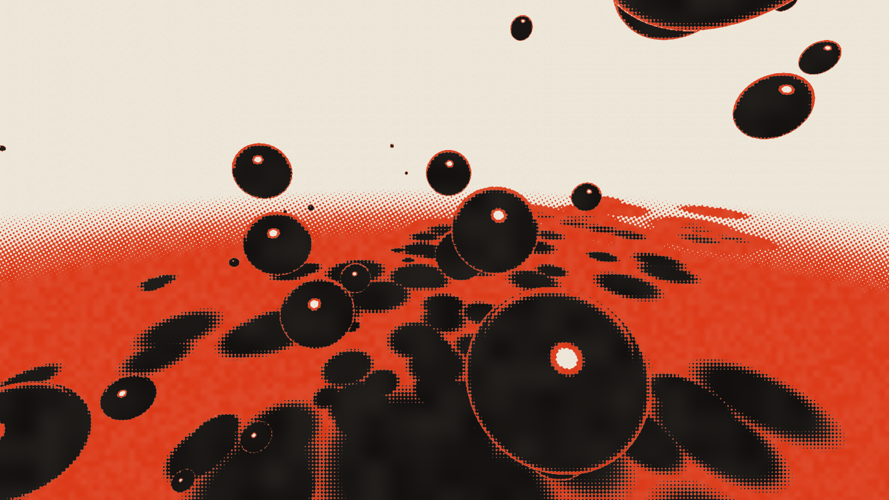
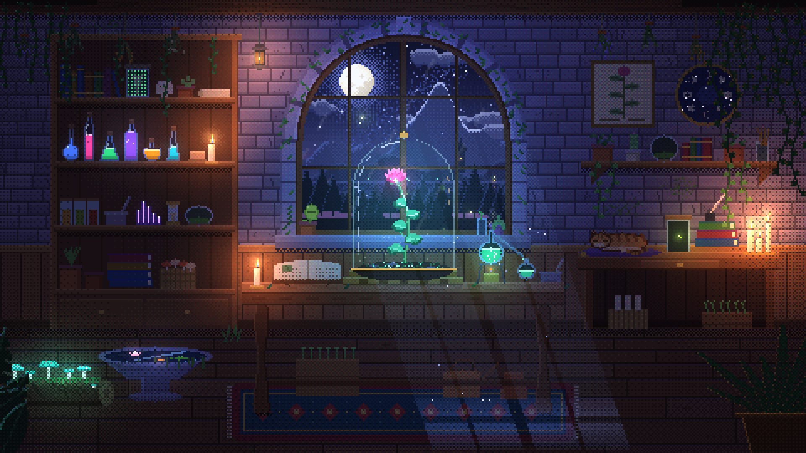
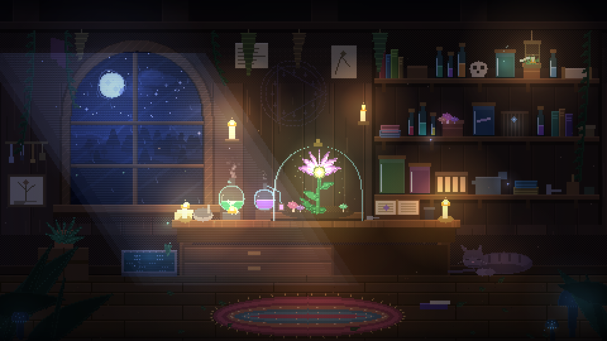
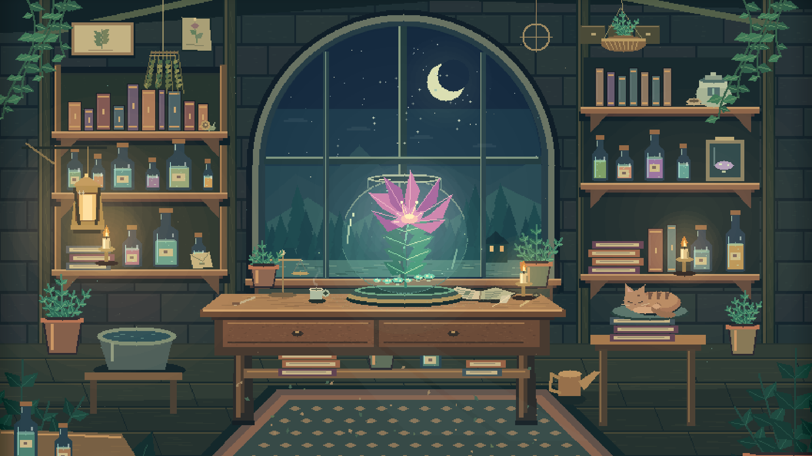
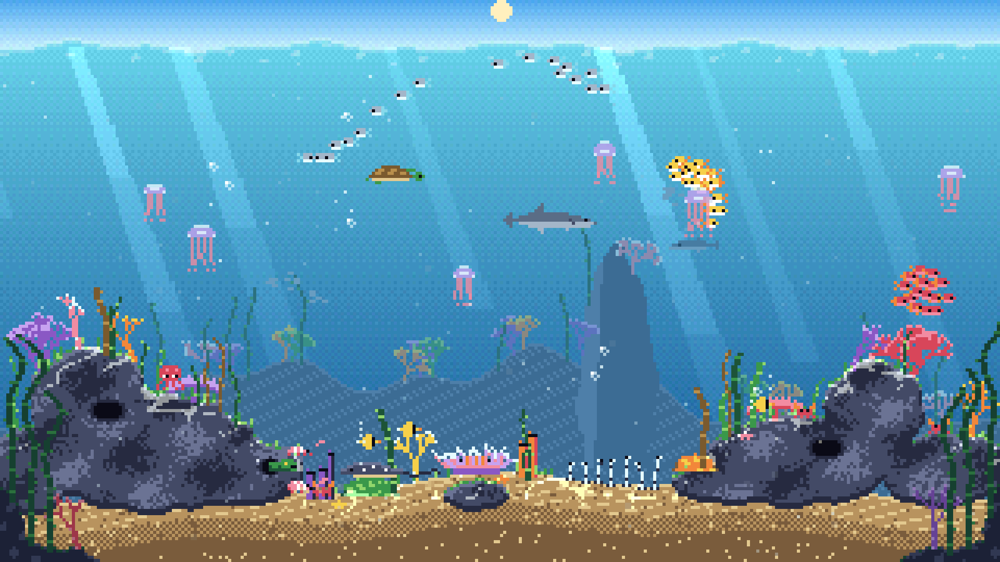

AI × Web / An experimental lab
AI × Web で、
何ができるかを実験する。
Experiments in AI, Interaction & Creative Coding
Featured
CLAUDE OPUS 5.5 / 2026- Model
- Claude Opus 5.5（Claude Code）
- Created
- 2026-09-25
- Format
- 20秒ループ / WebGL2 / Single HTML
Index
06 WORKS

Moonlit Botanical Laboratory
Series: Magical Botanical Laboratory

The Moonlit Herbarium
Series: Magical Botanical Laboratory

The Nocturnal Conservatory
Series: Magical Botanical Laboratory

サンゴ礁の一日
Coral Reef Day
Fields
研究分野
- Pixel Art 4 works
- Generative Art
- 3D
- Motion 2 works
- Voice
- Realtime UI
- Agent UI
- Character
- Interactive Web
- Visualization
About the lab
AI × Web で、何ができるかを実験する。AI Creative Lab は、モデルでつくり、ブラウザで動かし、その結果を観察する個人の実験ラボです。
実物と一緒にプロンプト、モデル、制作条件、計測値を公開します。同じ条件で追試し、実装や表現の違いを見比べられるように。記録のない数値は、記録のないまま残します。
The loop
- Experiment モデルで作る
- Artifact Labに実物を公開
- Engineering Zennに作り方と違いを書く
- DistributionXに動画を出す